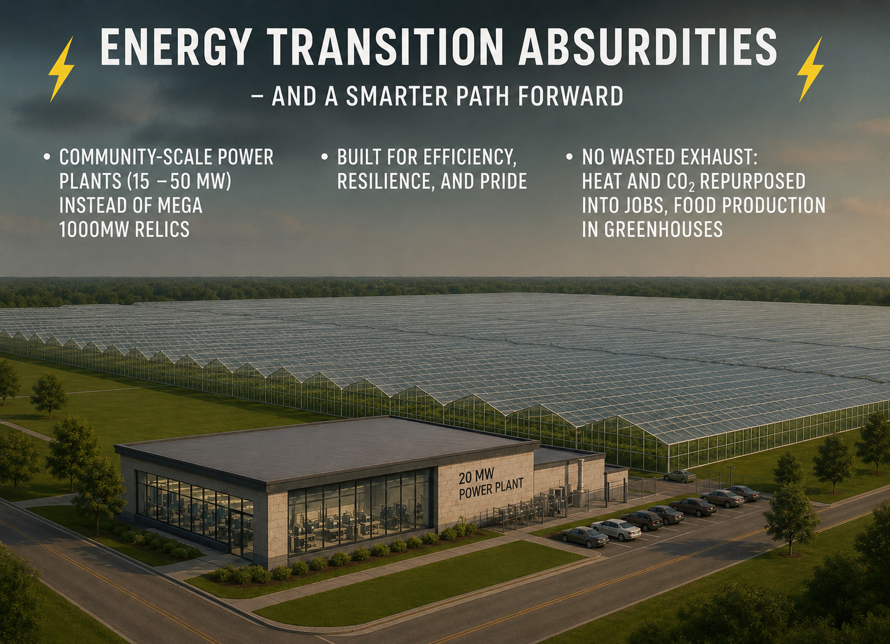
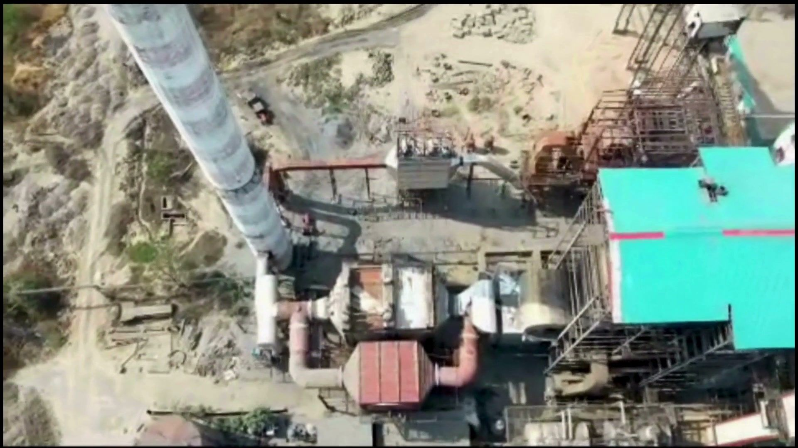

After the heat is harvested and the power is generated, what remains — cleaned CO₂ and water vapor — is exactly what a greenhouse wants. The stack runs clean, and the community eats year-round.
Plants grow faster with supplemental CO₂, steady warmth, and water. The Sidel CREN chain produces all three as by-products: the SRU condenses clean water, the storage stage delivers steady low-grade heat, and the cleaned exhaust supplies CO₂ enrichment. What used to be a compliance problem becomes the anchor of a local food economy.
Fresh produce grown beside industrial communities — not trucked in from another hemisphere.
Greenhouse operations create employment, training, and agricultural entrepreneurship.
Utilities, regulators, and host communities see the benefit with their own eyes — clear stacks and green rows.

The end-state vision: community-scale power plants (15–50 MW) built for efficiency and resilience — where nothing is wasted, heat and CO₂ are repurposed into jobs and food, and the neighbours are glad the plant is there.